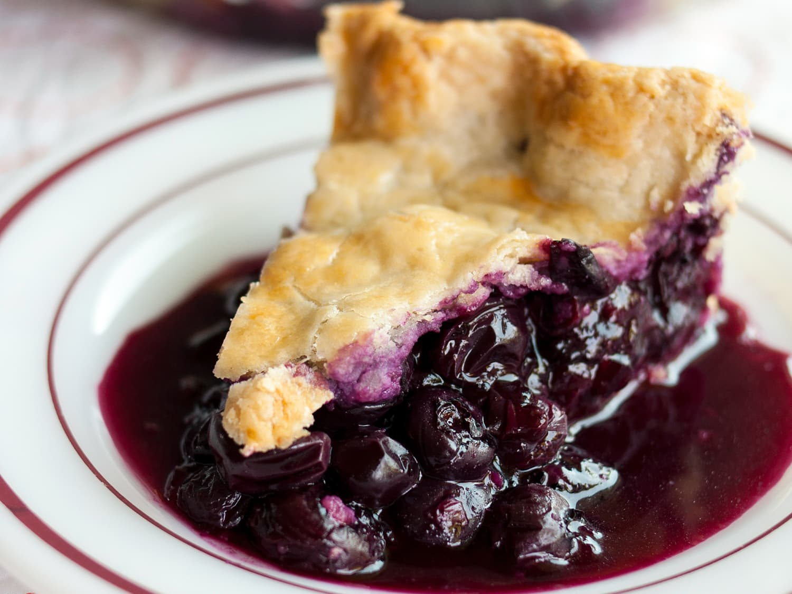

Homemade Blueberry Pie

Description
Nothing screams "summer" quite like blueberry pie.
This top-rated blueberry recipe will quickly become a seasonal staple in your home!
Ingredients
- Sugar
- Cornstarch
- Cinnamon
- Salt
- Blueberries
- Pie Crust
- Butter
Steps
- Sprinkle the berries with sugar,cornstarch,cinnamon and salt.
- Pout the filling into the bottom pie crust and finish with a latice crust on top.
- Bake until the filling is bubbling and the crust is golden.